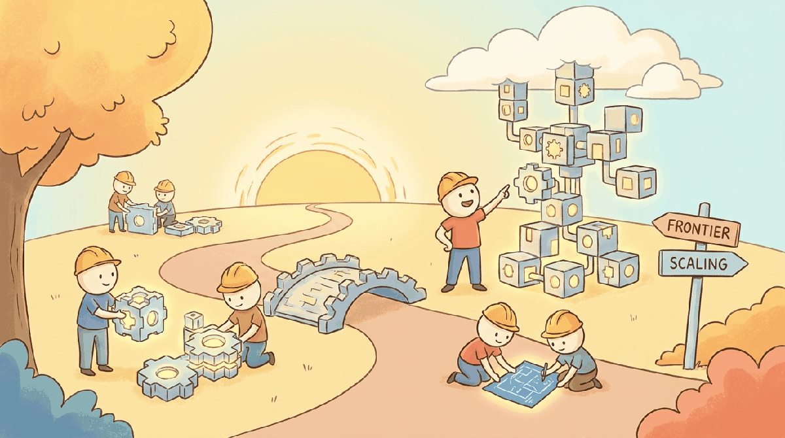

"The only thing I know is that I know nothing."
Frontier, Humbly Curious AI Agent
The previous chapters cover what the field has settled on. Part XVI covers what it has not. This first chapter focuses on the architecture and scaling axis: emergent abilities (real or mirage?), the scaling frontiers and data-wall debates, alternative architectures (Mamba, RWKV, state-space, hybrid), and the expansion of transformers as a universal sequence-modeling tool across genomics, robotics, and time series. Theory of reasoning, memory, interpretability, and the agency question live in Chapter 81; hardware and systems live in Chapter 58; AGI trajectories live in Chapter 82.
Chapter Overview
This chapter examines the architectural and scaling frontiers that will shape the next generation of AI systems. It begins with the ongoing debate over emergent abilities: do large language models exhibit sudden, unpredictable capability jumps, or is this an artifact of measurement? It then surveys scaling frontiers including data walls, synthetic data strategies, test-time compute, and the alternative architectures (Mamba, RWKV, hybrid models) that challenge transformer dominance. The chapter continues with world models for video and simulation, formal frameworks for LLM reasoning, memory as a computational primitive, mechanistic interpretability at scale, the philosophical and engineering boundaries of agency, efficient multi-tool orchestration, and the expanding role of transformers as universal sequence machines across domains from genomics to robotics.
The Transformer may not be the final word in sequence modeling. This chapter explores emerging architectures like state-space models, mixture-of-experts variants, and retrieval-augmented pretraining that may shape the next generation of language models. Understanding these trends helps you future-proof the skills built throughout this book.
- Critically evaluate claims about emergent abilities in large language models
- Understand the data, compute, and architectural frontiers shaping next-generation models
- Compare transformer alternatives (Mamba, RWKV, hybrid models) and their trade-offs
- Assess when alternative architectures may be preferable to standard transformers
- Explain how world models bridge language understanding and physical reasoning through video generation, simulation, and embodied planning
- Analyze formal frameworks for LLM reasoning, including chain-of-thought computation, process reward models, and compositional reasoning limits
- Evaluate memory architectures (MemGPT, Letta) that extend models beyond fixed context windows
- Apply mechanistic interpretability techniques (sparse autoencoders, circuit analysis) to understand and debug model behavior
- Distinguish degrees of agency in AI systems and reason about safety implications such as instrumental convergence
- Design token-efficient tool orchestration patterns and evaluate the economics of multi-tool agent workflows
- Identify how transformer architectures generalize beyond text to domains such as genomics, protein folding, time series, and robotics
- Chapter 3: Transformer Architecture (self-attention, positional encoding, encoder-decoder structure)
- Chapter 6: Pretraining & Scaling Laws (Chinchilla scaling, loss curves, compute-optimal training)
- Chapter 9: Inference Optimization (KV cache, quantization, speculative decoding)
- Comfort with logarithmic scaling plots and basic statistical reasoning about benchmarks
Sections
- 80.1 Emergent Abilities: Real or Mirage? The question of whether large language models exhibit genuinely "emergent" abilities has profound implications for AI safety, capability forecasting, and resource allocation.
- 80.2 Scaling Frontiers: What Comes Next The era of "just scale up the Transformer architecture on more internet text" is approaching its limits.
- 80.3 Alternative Architectures Beyond Transformers The transformer's quadratic attention bottleneck creates a ceiling on sequence length and throughput.
- 80.4 Beyond Text: LLMs as Universal Sequence Machines How transformer architectures process DNA, proteins, molecules, time series, music, EHR events, robotic actions, and other non-text sequential data.
What's Next?
From the frontier we cross into the practitioner's side: Part XI takes you from an idea to a shipped AI product, including unit economics, post-launch monitoring, and multi-provider strategy.